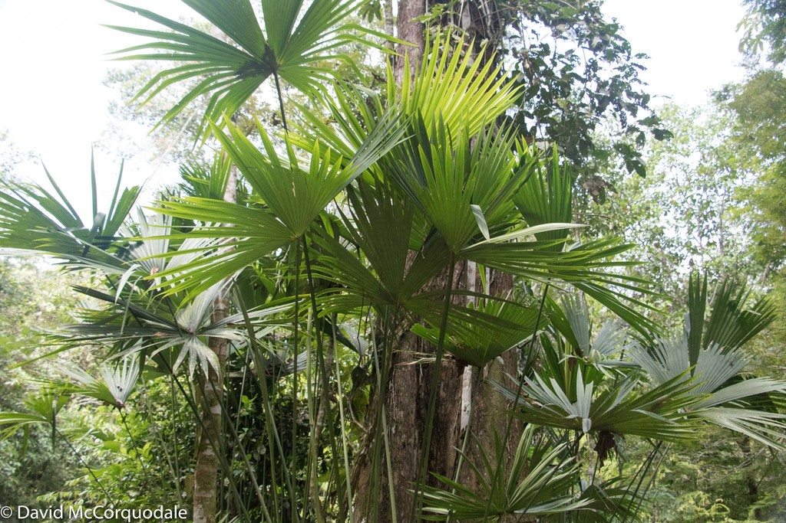

Cyclanthaceae
Panama Hat Plant Family
Cyclanthaceae is a family of monocotyledonous flowering plants native to the Neotropics. These are typically robust herbaceous plants, often epiphytic or terrestrial, recognized by their distinctive large leaves which are either deeply two-lobed (bifid) or fan-shaped. Their small, unisexual flowers are densely packed onto a fleshy spike (spadix), usually surrounded by conspicuous bracts (spathes).
Overview
The Cyclanthaceae family comprises about 12 genera and around 230 species, exclusively found in tropical Central and South America. They thrive in wet forest environments, growing either on the forest floor (terrestrial) or, very commonly, as root-climbing epiphytes on tree trunks. Some species are rheophytes, adapted to growing in or near flowing water.
As monocots, they exhibit features like parallel-appearing leaf venation (though modified by the leaf shape). The family is defined by its unique leaf morphology (bifid or fan-shaped blades), the characteristic spadix inflorescence protected by spathes (similar to Araceae, but differing in details), and the development of the entire spadix into a compound, fleshy fruit structure (syncarp). The family belongs to the order Pandanales.
The most famous member is Carludovica palmata, whose young leaves provide the fibers used to weave high-quality Panama hats (despite the name, the hats originated in Ecuador).
Quick Facts
- Scientific Name: Cyclanthaceae Poit. ex A.Rich.
- Common Name: Panama Hat Plant Family
- Number of Genera: Approximately 12
- Number of Species: Approximately 230
- Distribution: Neotropical (Tropical Central and South America)
- Evolutionary Group: Angiosperms - Monocots - Commelinids - Pandanales
Key Characteristics
Growth Form and Habit
Members are perennial herbaceous plants, often large and robust. They can be terrestrial with short rhizomes, or commonly epiphytic, climbing tree trunks with adventitious roots. Some are rheophytes. Stems can be short or elongated and climbing.
Leaves
Leaves are arranged alternately (spirally or in two ranks) and are typically large and distinctive. The leaf blade is either deeply cleft into two lobes (bifid, e.g., Cyclanthus) or broadly fan-shaped (flabellate) and palmately divided or ribbed (e.g., Carludovica). Petioles are long and have a sheathing base. Venation appears palmate but consists of parallel veins diverging from the petiole apex. Leaves lack stipules.
Inflorescence
The characteristic inflorescence is a spadix: a thick, fleshy spike bearing numerous, small, densely packed, unisexual flowers. The spadix is typically cylindrical or ellipsoid and is subtended or enclosed, especially when young, by 2 to several (often 4) large, petal-like or leathery bracts called spathes. These spathes are often white, cream, or greenish and usually fall off as the flowers mature or the fruit develops.
Flowers
Flowers are small, inconspicuous individually, unisexual (with male and female flowers on the same spadix - monoecious), and tightly aggregated. They often occur in distinct zones or alternating cycles on the spadix. The perianth (sepals and petals) is typically absent or highly reduced to small scales or lobes.
- Male flowers: Usually possess numerous stamens (from 10 to over 100). Filaments may be short or long; anthers typically have 4 pollen sacs. A reduced pistil (pistillode) may be present.
- Female flowers: Often fused together laterally. The ovary is usually inferior or semi-inferior (sometimes superior), typically composed of fused carpels forming a single chamber (1-locular) with numerous ovules on parietal placentas (attached to the ovary wall), or sometimes basal/apical placentation. Sterile stamens (staminodes) may be present, sometimes forming scale-like structures around the ovary. Stigmas are sessile or on short styles.
Fruits and Seeds
The entire spadix usually develops into a compound fruit structure, a fleshy syncarp, formed by the coalescence of the individual berries, receptacle tissue, and associated bracts. Individual fruits are technically berries, often fused together. Seeds are numerous, small, and have fleshy endosperm.
Chemical Characteristics
Plants often contain calcium oxalate crystals, typically in the form of raphides (needle-like crystals bundled together). Resins or latex may also be present in some species.
Field Identification
Identifying Cyclanthaceae in their Neotropical habitat relies on recognizing their unique combination of monocot features and specialized structures:
Primary Identification Features
- Herbaceous monocot habit: Look for non-woody plants, often large, either terrestrial or climbing epiphytes.
- Distinctive leaf shape: Leaves are large and either deeply two-lobed (bifid) or fan-shaped/palmately divided.
- Spadix inflorescence: A fleshy spike bearing tiny, densely packed flowers is characteristic. Look for associated large bracts (spathes), or scars where they attached, at the base of the spadix.
- Fleshy syncarp: The mature fruiting structure is a compound unit formed from the entire spadix.
Secondary Identification Features
- Neotropical distribution: Found only in tropical Central and South America.
- Habitat: Typically found in wet, humid forests.
- Sheathing leaf bases: The base of the long petiole wraps around the stem.
- Parallel-appearing venation: Despite the overall shape, the fine venation within lobes/segments is parallel, typical of monocots.
Seasonal Identification Tips
Vegetative features are generally present year-round:
- Year-round: The distinctive bifid or fan-shaped leaves are the most constant and recognizable feature. Habit (terrestrial vs. epiphytic) is also key.
- Flowering/Fruiting Season (Varies): The presence of the spadix (with or without spathes) or the mature fleshy syncarp provides definitive confirmation. Fallen spathes near the base of the plant can also be indicative.
Common Confusion Points
Cyclanthaceae can be confused with other large-leaved tropical monocots:
- Palms (Arecaceae): Palms are typically woody with distinct trunks (though some are acaulescent or climbing) and have different types of inflorescences (usually branched spadices) and fruits (drupes, berries, not syncarps from a single spadix). Leaf venation differs.
- Aroids (Araceae): Also possess a spadix and spathe, but leaf shapes are highly variable (rarely consistently bifid or fan-shaped across the family in the same way). Flower arrangement on the spadix and fruit development often differ. Many aroids have net-like venation despite being monocots.
- Zingiberales (e.g., Heliconiaceae, Musaceae): Have large leaves, but these are typically entire (not bifid/fan-shaped) with a prominent midrib and pinnate-parallel venation. Inflorescences are very different (often involving large, colorful bracts, but not a spadix/spathe).
- Focus on the combination: Herbaceous + Bifid/Fan-shaped Leaves + Spadix/Spathe + Neotropical = Strong indication of Cyclanthaceae.
Field Guide Quick Reference
Look For:
- Herbaceous monocots (terrestrial/epiphytic)
- Large leaves: deeply bifid OR fan-shaped
- Long petioles with sheathing bases
- Inflorescence: Spadix (fleshy spike)
- Subtending spathes (bracts, may fall early)
- Fruit: Fleshy syncarp (compound)
Key Variations:
- Leaf blade deeply split vs. fan-like
- Number and persistence of spathes
- Terrestrial vs. root-climbing habit
- Spadix shape (cylindrical, ellipsoid)
- Found only in Neotropics
Notable Examples
Several genera within Cyclanthaceae are notable for their distinctive forms or uses:

Carludovica palmata
Panama Hat Plant
Famous as the source of fiber for Panama hats. This terrestrial species has large, fan-shaped (palmate-like) leaves. It resembles a stemless palm.

Cyclanthus bipartitus
(No common name)
Easily recognized by its large, deeply bifid leaves that look like two separate halves joined at the base. The spadix has distinctive alternating rings of male and female flowers.

Asplundia species
(Various species)
A large genus within the family, often root-climbing epiphytes. Leaves are typically bifid but can vary. Important components of the Neotropical forest understory and canopy.
Phylogeny and Classification
Cyclanthaceae is classified within the order Pandanales, which is part of the Commelinid clade of Monocots. This placement is well-supported by molecular phylogenetic analyses.
The Pandanales order groups several families that are morphologically quite diverse but share underlying genetic similarities. Cyclanthaceae's closest relatives within the order include Pandanaceae (Screw Pine family), Stemonaceae, Velloziaceae, and Triuridaceae. The evolution of the spadix and spathe in Cyclanthaceae represents an interesting convergence with the Araceae (Aroid family), which belong to a different monocot order (Alismatales).
Position in Plant Phylogeny
- Kingdom: Plantae
- Clade: Angiosperms (Flowering plants)
- Clade: Monocots
- Clade: Commelinids
- Order: Pandanales
- Family: Cyclanthaceae
Evolutionary Significance
Cyclanthaceae represents an important Neotropical lineage within the monocots:
- Neotropical Radiation: The family has diversified extensively within Central and South American rainforests, occupying various niches (terrestrial, epiphytic).
- Convergent Evolution: The spadix/spathe inflorescence structure shows convergence with Araceae, highlighting similar evolutionary solutions for pollination in dense forest environments.
- Unique Morphology: The distinctive bifid and fan-shaped leaves are unique morphological adaptations within monocots.
- Economic Importance: The use of Carludovica palmata for Panama hats is a significant ethnobotanical example.